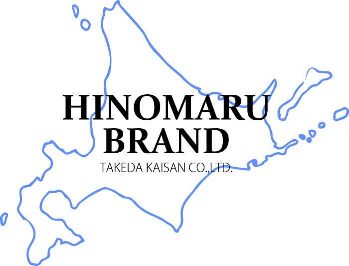

事業紹介



私たちは、「北海道の海の幸の台所」札幌市中央卸売市場から車で約30分、日本海に面した石狩市という恵まれた環境のもと蟹の加工・販売を主軸とした水産加工会社です。

弊社では、大手水産会社等からの委託加工を主軸としておりますが昨今の食のライフスタイルやニーズの変化に伴うお客様からの多様なご要望にお応えするために2019年に工場を全面改修致しました。

衛生的な施設・充実した設備熟練した技術力を取り揃えて国内産 輸入品、一般消費者様向け・加工 業者様向け等々安心安全をモットーにお客様にご満足いただける様々な商品をお届けして参ります。